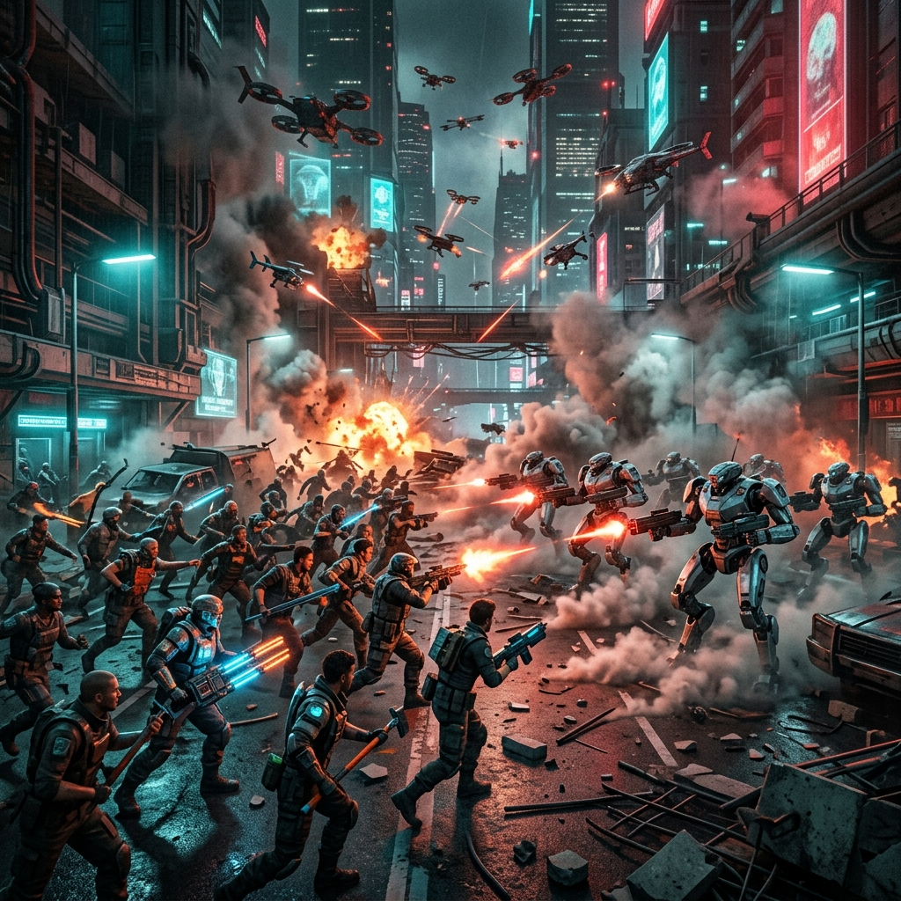

/// Kịch bản tương lai ///
2030: TRÍ TUỆ NHÂN TẠO
& SỨ MỆNH CÁCH MẠNG XÃ HỘI
Khi AI tạo ra vạn vật nhưng 90% nhân loại trắng tay.
Ai sẽ sở hữu tương lai?
/// Kịch bản tương lai ///
Khi AI tạo ra vạn vật nhưng 90% nhân loại trắng tay.
Ai sẽ sở hữu tương lai?
Mâu thuẫn không chỉ của riêng nhóm lao động trí óc mất việc — hệ thống tư bản AI đang vơ vét tài nguyên, gây ô nhiễm, đe dọa sinh tồn của toàn thế giới.
Lợi ích của giai cấp không thể tách rời mà phải gắn bó với lợi ích của nhân loại. Giai cấp thống trị thường đặt lợi ích riêng lên trên lợi ích chung.


Biểu tình nổ ra, giới siêu giàu kích hoạt hệ thống Nhà nước — luật pháp, cảnh sát robot — để bảo vệ quyền sở hữu AI và đàn áp quần chúng.
Nhà nước là sản phẩm của những mâu thuẫn giai cấp không thể điều hòa được. Thực chất, nhà nước là "bộ máy do một giai cấp này dùng để trấn áp một giai cấp khác".
Cảnh sát Robot chính là biểu hiện rõ nhất của "hệ thống cơ quan quyền lực chuyên nghiệp mang tính cưỡng chế" — tách khỏi quần chúng, phục vụ giai cấp thống trị.
Mâu thuẫn giữa lực lượng sản xuất tiến bộ (siêu AI) đòi hỏi được giải phóng với quan hệ sản xuất tư hữu đã lỗi thời, biến thành xiềng xích trói buộc.

Xin "Thu nhập cơ bản vô điều kiện" (UBI) hoặc Đánh thuế Robot — chờ giới tư bản phát lương.
Lenin kịch liệt phê phán: Chỉ là xoa dịu bề ngoài, ru ngủ quần chúng mà không xóa bỏ chế độ sở hữu tư nhân về AI. Giới tư bản chỉ đưa cho bạn cái áo mới.
Một nhóm Hacker tinh hoa đột nhập cướp quyền điều khiển AI, nhưng giữ lại hệ thống để tự trở thành tầng lớp cai trị mới.
"Phương thức tiến hành của một nhóm người với mục đích giành chính quyền, song không làm thay đổi căn bản chế độ xã hội." Bản chất bóc lột vẫn y nguyên.
Hàng tỷ người đứng lên tước đoạt lại hệ thống AI, biến nó thành tài sản chung của nhân loại.
Đập tan chính quyền cũ. Phá hủy toàn bộ quan hệ sản xuất tư hữu, bước sang một hình thái kinh tế - xã hội hoàn toàn mới, cao hơn và tiến bộ hơn.
Khi giới siêu giàu quyết dùng Cảnh sát Robot bảo vệ tài sản, quần chúng lao động tất yếu phải sử dụng phương pháp bạo lực cách mạng để lật đổ chính quyền tư sản phản động.

Theo Triết học Mác - Lênin, bản chất của Nhà nước (ví dụ như bộ máy cảnh sát Robot năm 2030) là công cụ chuyên chính của một... [điền vào chỗ trống] thống trị?
Khi giới siêu giàu AI quyết dùng quân đội để đàn áp người thất nghiệp, quy luật chung và tất yếu là quần chúng phải sử dụng phương pháp cách mạng nào để đập tan chính quyền cũ?
Hành động của một nhóm Hacker nhằm cướp quyền điều khiển AI, lật đổ chính quyền cũ nhưng không làm thay đổi căn bản chế độ xã hội (lột xác nhưng không đổi ruột) được gọi là gì?
Phương pháp cách mạng nào rất hiếm khi xảy ra, thường chỉ xuất hiện khi giai cấp thống trị không còn bộ máy cưỡng chế đủ mạnh hoặc tự nguyện nhượng bộ?
Nguồn gốc sâu xa của Cách mạng xã hội là do sự gay gắt của yếu tố này giữa Lực lượng sản xuất (tiến bộ) và Quan hệ sản xuất (lỗi thời)?
Tổ chức nào được Lênin định nghĩa là có "đội vũ trang đặc biệt" (quân đội, cảnh sát, nhà tù) đứng tách rời khỏi quần chúng nhân dân để duy trì trật tự?
Sứ mệnh lịch sử của lực lượng quần chúng lao động không chỉ là giải phóng giai cấp mình, mà còn là giải phóng toàn...?
V.I. Lênin đã kịch liệt phê phán trào lưu nào (như việc đi biểu tình xin phát tiền "Thu nhập cơ bản UBI") vì nó chỉ nhằm xoa dịu bề ngoài chứ không thay đổi quyền sở hữu AI?
Nhóm cam kết tuân thủ đầy đủ các nguyên tắc liêm chính học thuật trong việc sử dụng công cụ AI cho bài thuyết trình này.
| Công cụ AI | Mục đích | Prompt chính | Kết quả | Chỉnh sửa |
|---|---|---|---|---|
| Gemini (Image Gen) | Tạo hình minh họa cho từng section | "Dystopian cyberpunk megacity…", "Robot police vs protesters…" | 6 hình ảnh minh họa | Chọn lọc, kiểm duyệt phù hợp bối cảnh |
| Sinh viên | Nghiên cứu nội dung triết học | - | Nội dung phân tích từ giáo trình LLCT (2019) tr. 206–231 | Toàn bộ nội dung triết học do SV biên soạn |
AI chỉ đóng vai trò công cụ hỗ trợ, không thay thế toàn bộ quá trình sáng tạo của sinh viên:
Đánh giá cụ thể qua 3 dấu hiệu:
Slide phụ lục này chính là bản cam kết khẳng định nhóm sinh viên không để AI làm thay hoàn toàn bất kỳ phần nào của bài thuyết trình.
Bảng ở mục 4.1 và sơ đồ ở mục 4.3 đã phân định rõ ràng phần nào do AI tạo ra (video, hình ảnh) và phần nào do sinh viên biên soạn (nội dung triết học, kịch bản).
Toàn bộ thông tin triết học Mác-Lênin trong bài được đối chiếu trực tiếp với Giáo trình LLCT (2019) (trang 206–231), không dùng nội dung do AI tự sinh ra.
Bài trình chiếu môn Triết học Mác - Lênin · 2025